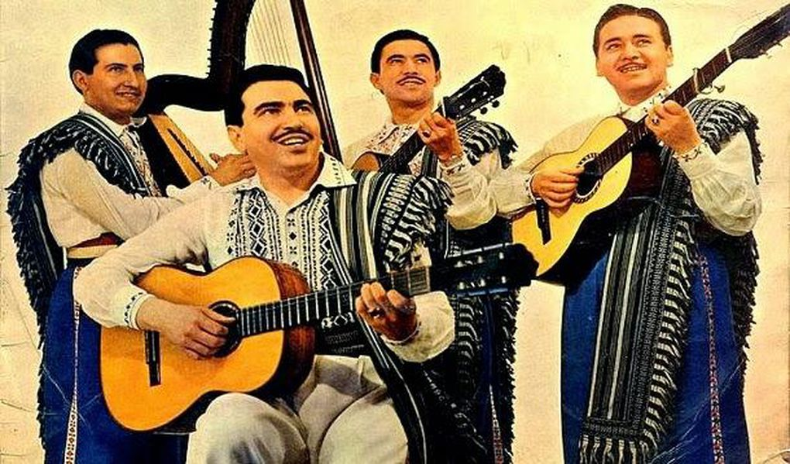

Los Paraguayos is a music group consisting of musicians from Paraguay. Since its foundation in the 1950s, the group has featured many singers and musicians, playing guitars, bongo drums and a Paraguayan harp, including Luis Alberto del Paraná, Reynaldo Meza, Angel "Pato" Garcia and Carlos Espinoza.
The group performs many South American and Mexican tunes and songs, including classics, such as Guantanamera, El Cóndor Pasa, Pajaro Campana (The Bell Bird) and La Bamba. Having had many changes in their line-up, the group has retained its popularity, selling many albums and appearing at many concerts throughout the world. In 2007, Los Paraguayos played a world tour, including appearances in The Netherlands and Israel.